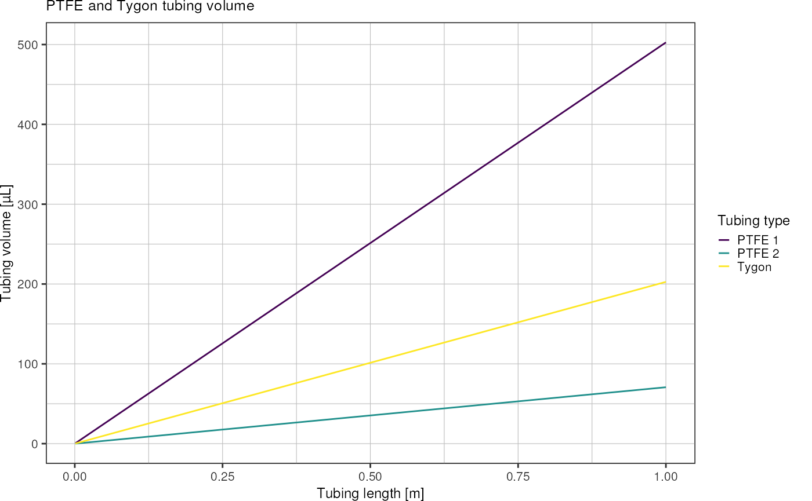
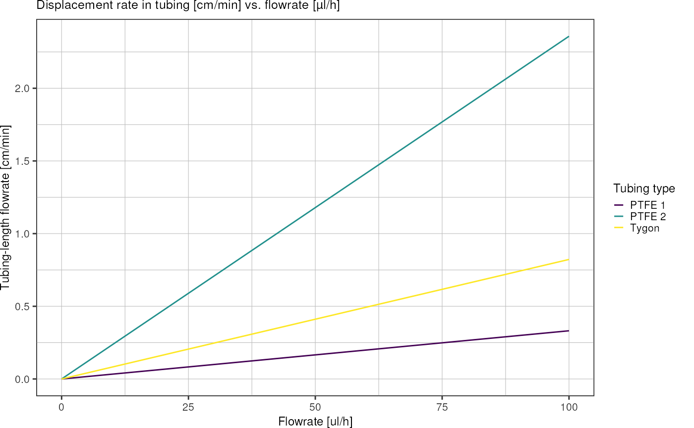
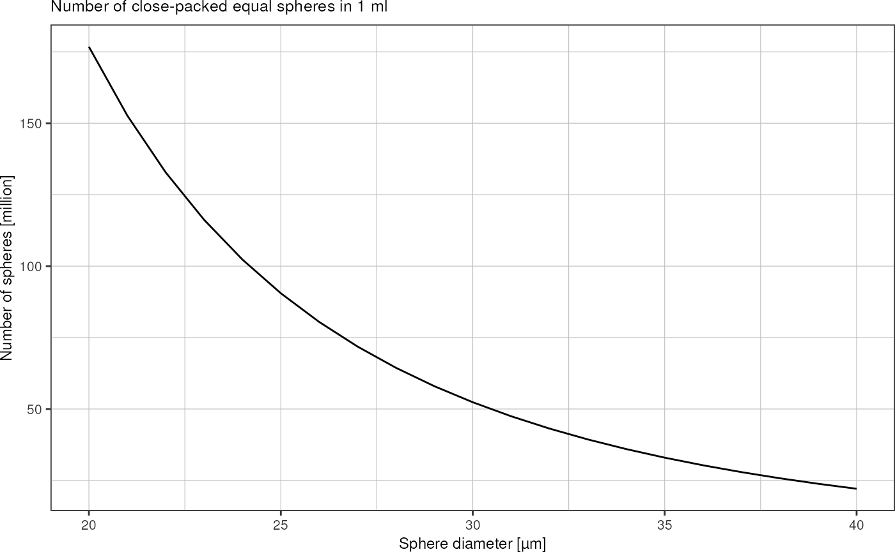
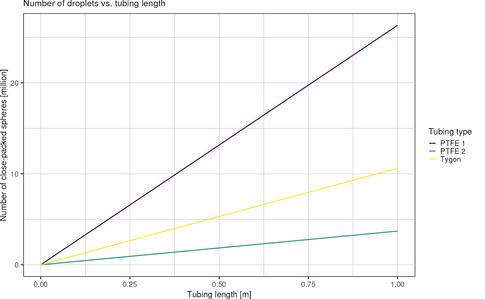
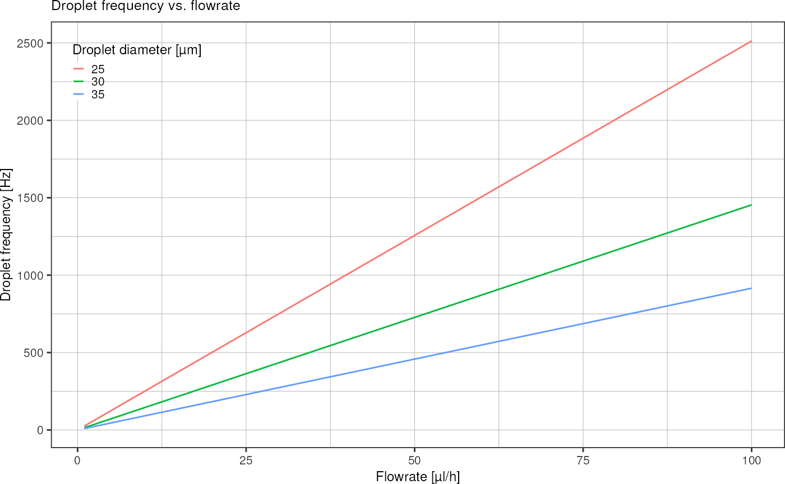
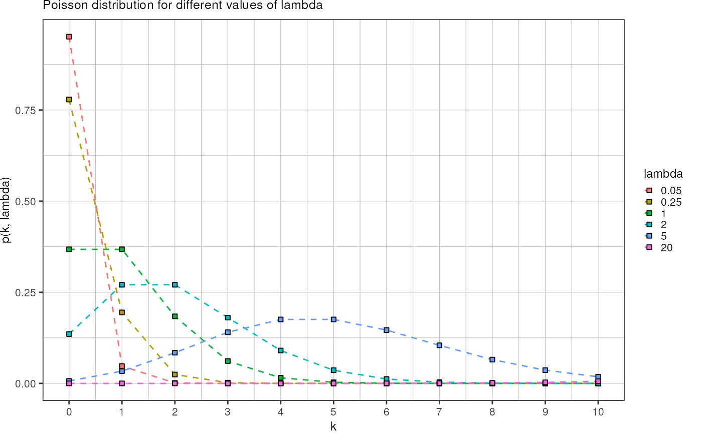

Volumes and Concentrations
volumes.RmdIn this vignette, calculations to estimate volumes, concentrations and other quantities relevant for the droplet making and picoinjection workflow are documented.
Tubing
Volume of a cylinder with radius \(r\) and height \(h\):
\[V = \pi r^2 h\]
getCylinderVolume <- function(radius, height) {
return(pi * radius^2 * height)
}Tubing options:
| type | inner diameter | outer diameter |
|---|---|---|
| Tygon | 0.508 mm (0.020 in) | 1.524 mm (0.060 in) |
| PTFE 1 | 0.8 mm | 1.6 mm |
| PTFE 2 | 0.3 mm | 0.78 mm |
# everything in m
radiusTygon <- 0.508e-3 / 2
radiusPTFE1 <- 0.8e-3 / 2
radiusPTFE2 <- 0.3e-3 / 2Plot the tubing volume as a function of tubing length for lengths up to 1 meter:
volumes <- tibble::tibble("length" = seq(1,1000)) %>%
dplyr::mutate(length = length * 1e-3) %>% # convert into mm
dplyr::mutate(v_tygon = getCylinderVolume(radiusTygon, length),
v_ptfe_large = getCylinderVolume(radiusPTFE1, length),
v_ptfe_small = getCylinderVolume(radiusPTFE2, length)) %>%
tidyr::pivot_longer(!length, names_to = "type", values_to = "volume")
volumes
#> # A tibble: 3,000 × 3
#> length type volume
#> <dbl> <chr> <dbl>
#> 1 0.001 v_tygon 2.03e-10
#> 2 0.001 v_ptfe_large 5.03e-10
#> 3 0.001 v_ptfe_small 7.07e-11
#> 4 0.002 v_tygon 4.05e-10
#> 5 0.002 v_ptfe_large 1.01e- 9
#> 6 0.002 v_ptfe_small 1.41e-10
#> 7 0.003 v_tygon 6.08e-10
#> 8 0.003 v_ptfe_large 1.51e- 9
#> 9 0.003 v_ptfe_small 2.12e-10
#> 10 0.004 v_tygon 8.11e-10
#> # … with 2,990 more rows
ggplot(volumes, aes(x = length, y = volume * 1e9, color = type)) +
geom_line() +
scale_colour_viridis_d(labels = c("PTFE 1", "PTFE 2", "Tygon")) +
labs(x = "Tubing length [m]",
y = "Tubing volume [µL]",
color = "Tubing type",
title = "PTFE and Tygon tubing volume") +
theme_pretty()
Convert flowrate unit µl/h into tubing cm/h:
flowrates <- tibble::tibble("ul_h" = seq(0, 100)) %>%
dplyr::mutate("Tygon" = ul_h / (getCylinderVolume(radiusTygon, 0.01) * 1e9),
"PTFE 1" = ul_h / (getCylinderVolume(radiusPTFE1, 0.01) * 1e9),
"PTFE 2" = ul_h / (getCylinderVolume(radiusPTFE2, 0.01) * 1e9)) %>%
tidyr::pivot_longer(!ul_h, names_to = "tubing_type", values_to = "cm_h")
ggplot(flowrates, aes(x = ul_h, y = cm_h / 60, color = tubing_type)) +
geom_line() +
scale_color_viridis_d() +
theme_pretty() +
labs(x = "Flowrate [ul/h]",
y = "Tubing-length flowrate [cm/min]",
color = "Tubing type",
title = "Displacement rate in tubing [cm/min] vs. flowrate [µl/h]")
Droplets
How much liquid is contained in a droplet of diameter \(d\)?
Volume of a sphere: \[V = \frac{4}{3} \pi r^3\]
getSphereVolume <- function(radius) {
return(4/3 * pi * radius^3)
}Plot droplet volumes as function of diameter:
tibble::tibble("diameter" = seq(10, 100) * 1e-6) %>% # 10-200 µm droplets
dplyr::mutate("volume" = getSphereVolume(diameter/2)) %>%
ggplot(aes(x = diameter*1e6, y = volume * 1e15)) + # y-axis in picoliters
geom_line() +
labs(x = "Droplet diameter [µm]",
y = "Droplet volume [pL]",
title = "Droplet volume vs. diameter") +
theme_pretty()For droplet sizes up to 40 µm:
last_plot() +
coord_cartesian(xlim = c(10, 40), ylim = c(0, 35))How many droplets are there in 1 ml of emulsion?
radiusDroplet <- 15e-6 # 30 micron dropletsAssuming close-packing of equal spheres: fraction of space occupied by spheres is
\[\frac{\pi}{3 \sqrt{2}} \approx 0.74048\]
getNumberOfClosePackedSpheres <- function(radius, volume) {
volumeSingleSphere <- 4/3 * pi * radius^3
packingDensity <- pi/3/sqrt(2)
return(packingDensity * volume / volumeSingleSphere)
}Using this packing density, I can calculate the volume fraction occupied by spheres. Dividing by the known volume of a single droplet yields the total number of droplets contained in a given volume of emulsion.
Plot number of droplets contained in 1 ml of emulsion vs. droplet diameter:
tibble::tibble("diameter" = seq(20, 40) * 1e-6,
"n_drops" = getNumberOfClosePackedSpheres(diameter/2, 1e-6)) %>%
ggplot(aes(x = diameter * 1e6, y = n_drops * 1e-6)) +
geom_line() +
labs(title = "Number of close-packed equal spheres in 1 ml",
x = "Sphere diameter [µm]",
y = "Number of spheres [million]") +
theme_pretty()
How many droplets are there in a given length of Tygon/PTFE tubing?
Plot number of close-packed spheres over tubing length:
volumes %>%
dplyr::mutate(n_droplets = getNumberOfClosePackedSpheres(radiusDroplet, volume)) %>%
ggplot(aes(x = length, y = n_droplets*1e-6, color = type)) +
geom_line() +
scale_colour_viridis_d(labels = c("PTFE 1", "PTFE 2", "Tygon")) +
labs(x = "Tubing length [m]",
y = "Number of close-packed spheres [million]",
color = "Tubing type",
title = "Number of droplets vs. tubing length") +
theme_pretty()
Droplet frequency: Given a droplet diameter and a fixed emulsion flow rate, how many droplets per second do I get?
tidyr::crossing("flowrate" = seq(1, 100) * 1e-9 / (60*60), # convert µl/h into m^3/s
"diameter" = c(25, 30, 35) * 1e-6) %>%
dplyr::mutate("frequency" = 0.74* flowrate / getSphereVolume(diameter/2)) %>%
ggplot(aes(x = flowrate * (3600/1e-9), y = frequency, color = factor(diameter*1e6))) +
geom_line() +
labs(title = "Droplet frequency vs. flowrate",
y = "Droplet frequency [Hz]",
x = "Flowrate [µl/h]",
color = "Droplet diameter [µm]") +
theme_pretty() +
theme(legend.position = c(0,1),
legend.justification = c(0,1))
Volume increase due to picoinjection
Described in (Abate et al. 2010) are injected volumes in the range of 0.5-2 pl for ~ 40 µm droplets (not mentioned in the paper). The injection volume range of the stepinjector (Hu et al. 2021) is documented as 3.5-122 pl.
How does the diameter of my droplet increase when picoliter volumes are added?
tidyr::crossing("radius" = seq(7.5, 17.5, 0.1) * 1e-6,
"injected" = c(0.5, 1, 2, 5, 10) * 1e-15) %>%
dplyr::mutate("volume_before" = getSphereVolume(radius),
"volume_after" = volume_before + injected,
"radius_after" = (3/4*volume_after/pi)^(1/3)) %>%
ggplot(aes(x = 2*radius*1e6, y = 2*radius_after*1e6, color = factor(injected * 1e15))) +
geom_hline(yintercept = 30, linetype = "dashed") +
geom_line() +
labs(x = "Droplet diameter [µm]",
y = "Droplet diameter after injection [µm]",
color = "Injected volume [pl]",
title = "Change in droplet size after picoinjection") +
theme_pretty()Conclusion:
Which concentration of cells do I need if picoliter volumes are injected and on average 1/2/5 cells per droplet should be encapsulated?
tidyr::crossing("injected" = seq(1, 10), # pl
"lambda" = c(1, 2, 5)) %>%
dplyr::mutate("concentration" = lambda/injected*1e9) %>%
ggplot(aes(x = injected, y = concentration, color = factor(lambda))) +
geom_line() +
scale_y_continuous(sec.axis = sec_axis(trans = ~./8e8, name = "Corresponding OD600 value")) +
labs(x = "Injected volume [pl]",
y = "Cell concentration [cfu/ml]",
color = "Average #cells per injection",
title = "Required cell concentration vs. injected volume for a given mean number of cells per injection") +
theme_pretty() +
theme(legend.position = c(1,1),
legend.justification = c(1,1))Cells
How does the volume of a cell compare to that of a droplet?
Approximate dimensions of a typical E.coli cell:
- diameter = 1 µm
- length = 2 µm
- volume = 1.3 µm^3
Neglecting the packing, plot how many E.coli cells theoretically fit in one droplet:
vEcoli <- 1.3e-18
tibble::tibble("diameter" = seq(10, 40) * 1e-6) %>% # 10-200 µm droplets
dplyr::mutate("volume" = getSphereVolume(diameter/2),
"n_cells" = volume/vEcoli) %>%
ggplot(aes(x = diameter*1e6, y = n_cells)) + # y-axis in picoliters
geom_line() +
labs(x = "Droplet diameter [µm]",
y = "Number of cells equivalent to droplet volume",
title = "Number of E.coli cells equivalent to droplet volume vs. droplet diameter") +
theme_pretty()How many mCherry molecules are there in one bacterium, and what is the mCherry concentration in the droplet after cell lysis?
The motivation for this question is the following: In the end, we want to capture those droplets that contained a phage that successfully managed to kill the bacteria. While a droplet containing an intact cell causes a narrow signal of high magnitude after excitation by the laser, a droplet whose cells were lysed should result in a broader, low-intensity signal, since its volumetric concentration of fluorescent protein is much smaller. However, it is not clear, whether this low signal can be distinguished from the background noise that is present at any given time.
Poisson statistics
From (Collins et al. 2015) about single-cell encapsulation:
- when number of encapsulated cells is large and size is significantly
smaller than the droplet (e.g. bacterial cells), the number of cells per
droplet can be representative of the volumetric concentration of cells
- number of cells can be approximated by a Gaussian distribution
- not the case for single-cell analysis
- if cells are distributed randomly in the aqueous phase, the quantity of cells per droplet is determined by Poisson statistics
- probabilistically estimate the proportion of single cells that are encapsulated according to the Poisson distribution, which is applicable in the case where the average cell arrival rate is known and the arrival of individual cells occurs independently from other cells
Poisson distribution:
\[p(k, \lambda) = \frac{\lambda^k e^{-\lambda}}{k!}\]
- \(k\) number of particles in a droplet
- \(\lambda\) average number of cells per droplet volume
Plot the Poisson distribution for different \(\lambda\):
tidyr::crossing("k" = seq(0,10),
"lambda" = c(0.05, 0.25, 1, 2, 5, 20)) %>%
dplyr::mutate("p" = dpois(k, lambda)) %>%
ggplot(aes(x = k, y = p)) +
geom_line(aes(color = factor(lambda)), linetype = "dashed") +
geom_point(aes(fill = factor(lambda)), shape = 22) +
scale_x_continuous(breaks = seq(0,10)) +
theme_pretty() +
labs(title = "Poisson distribution for different values of lambda",
y = "p(k, lambda)",
x = "k",
color = "lambda",
fill = "lambda")
Volume inference via Poisson statistics
Idea: Count how many droplets were injected with 0/1/2/3… cells and then determine the lambda that best fits the Poisson distribution to this data. If the bulk concentration of the injected phase is known precisely, I can use it to infer the injected volume. From that, I can then derive the change in droplet size.
Calculation example:
Let the cell concentration of the injected phase \(c_0 = 0.5 \cdot 10^9 \mathrm{cfu/ml}\). After picoinjection, the following droplet population was recorded:
counts <- tibble::tibble("cells_per_droplet" = seq(0,7),
"n_droplets" = c(13, 26, 26, 17, 10, 5, 2, 1))
counts
#> # A tibble: 8 × 2
#> cells_per_droplet n_droplets
#> <int> <dbl>
#> 1 0 13
#> 2 1 26
#> 3 2 26
#> 4 3 17
#> 5 4 10
#> 6 5 5
#> 7 6 2
#> 8 7 1Now I want to find the parameter \(\hat{\lambda}\) that best explains the observed data. This corresponds to the maximum likelihood estimate of the Poisson distribution which is simply the sample mean:
\[\hat{\lambda}_\mathrm{MLE} = \frac{1}{n} \sum_{i=1}^n k_i\]
weighted.mean(counts$cells_per_droplet, counts$n_droplets)
#> [1] 2.13For above data, \(\hat{\lambda}_\mathrm{MLE} = 2.13\) with the unit \(\mathrm{cfu/V_{injected}}\).
Using the known concentration \(c_0\) of my injected phase, I can now infer the injected volume as
\[\mathrm {V_{inj}} = \frac{2.13 \; \mathrm{cfu}}{0.5 \cdot 10^9 \; \mathrm{cfu/ml}} = 4.26 \cdot 10^{-9} \; \mathrm{ml} = 4.26 \; \mathrm{pl}\]
(Numbers of the example data were chosen to approximate picoinjection of 5 pl with on average 2 cells encapsulated per droplet)
How sensitive is this estimate w.r.t. the parameters of this system (i.e. cell concentration \(c_0\) and droplet counts)?
Implement a function that performs above calculation:
infer_injected_volume <- function(poissonCounts, c0) {
lambda_mle <- stats::weighted.mean(poissonCounts[["cells_per_droplet"]],
poissonCounts[["n_droplets"]])
v_injected <- lambda_mle/c0
return(v_injected)
}Simulate some variance in the measured data:
tibble::tibble("concentration" = seq(0.4, 0.6, 0.01) * 1e9) %>%
dplyr::mutate("v_injected" = infer_injected_volume(counts, concentration)) %>%
ggplot(aes(x = concentration, y = v_injected*1e9)) +
geom_vline(xintercept = 0.5e9, linetype = "dashed") +
geom_line() +
labs(x = "Bulk concentration [cfu/ml]",
y = "Injected volume [pl]") +
theme_pretty()Disadvantages of this approach:
- only works if either:
- I can detect the number of injected cells using the nyancat (i.e. in real time), or
- I keep the same parameters for the same experiment and image afterwards on the Nikon
- I have to get the initial concentration of cells right in order to land in a range of number of injected cells that allows to count them